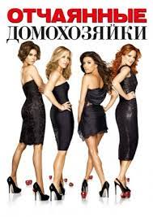

-
Описание:
В центре событий квартет современных домохозяек, которые живут в тихом пригороде на Вистерии Лейн и отчаянно ищут личного счастья.
-
Количество сезонов: 8
-
Страна: США
-
Актеры:
Тери Хэтчер, Фелисити Хаффман, Марсия Кросс, Ева Лонгория, Николетт Шеридан